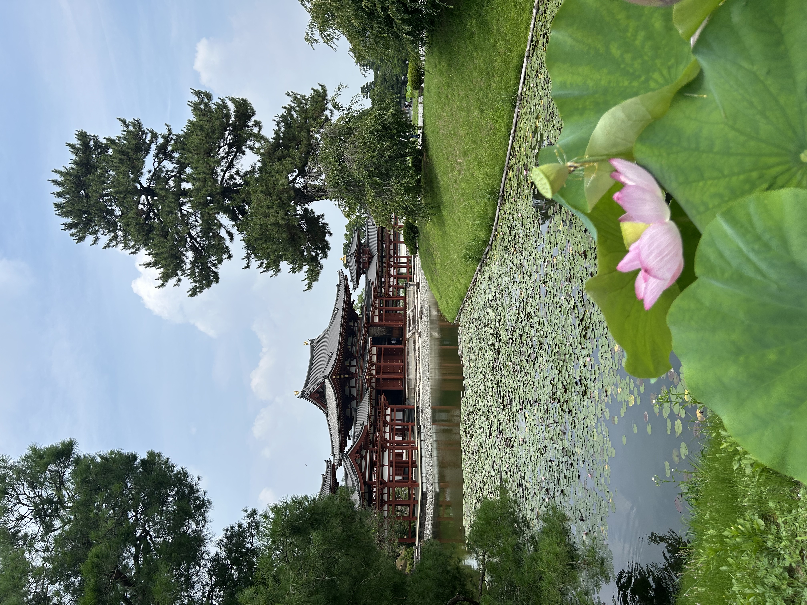
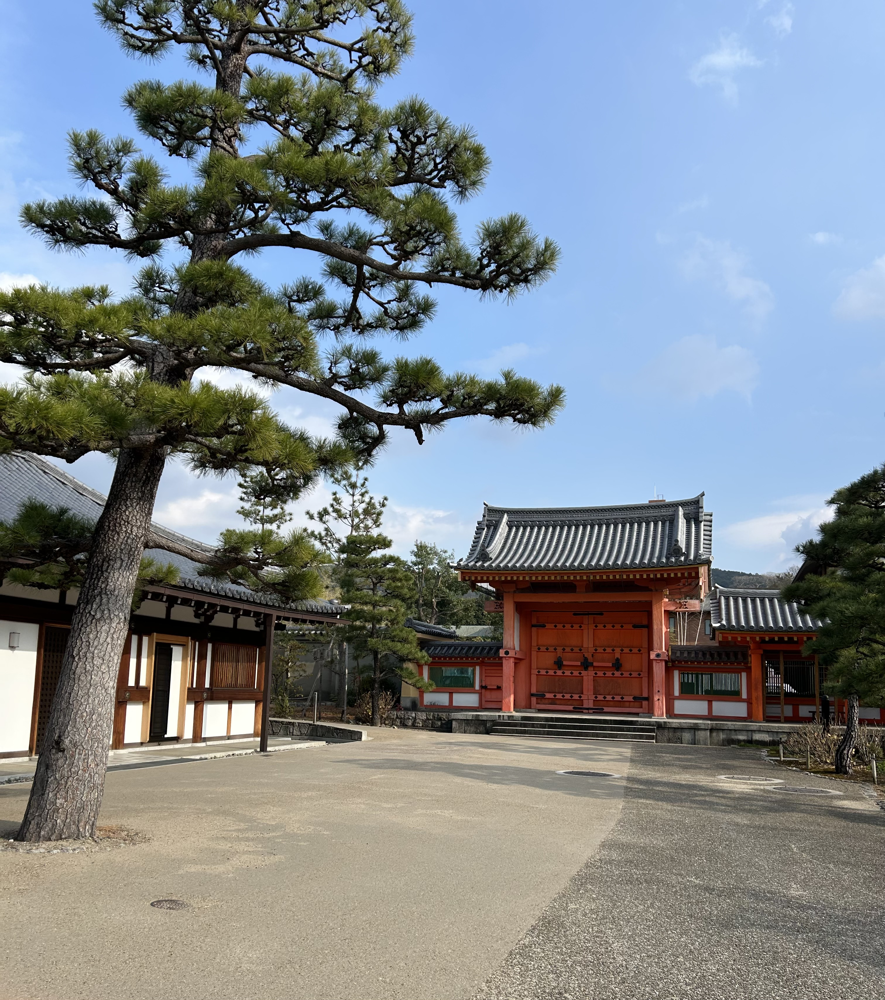
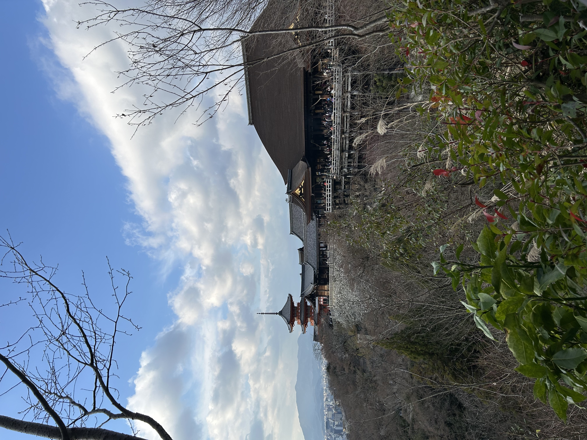
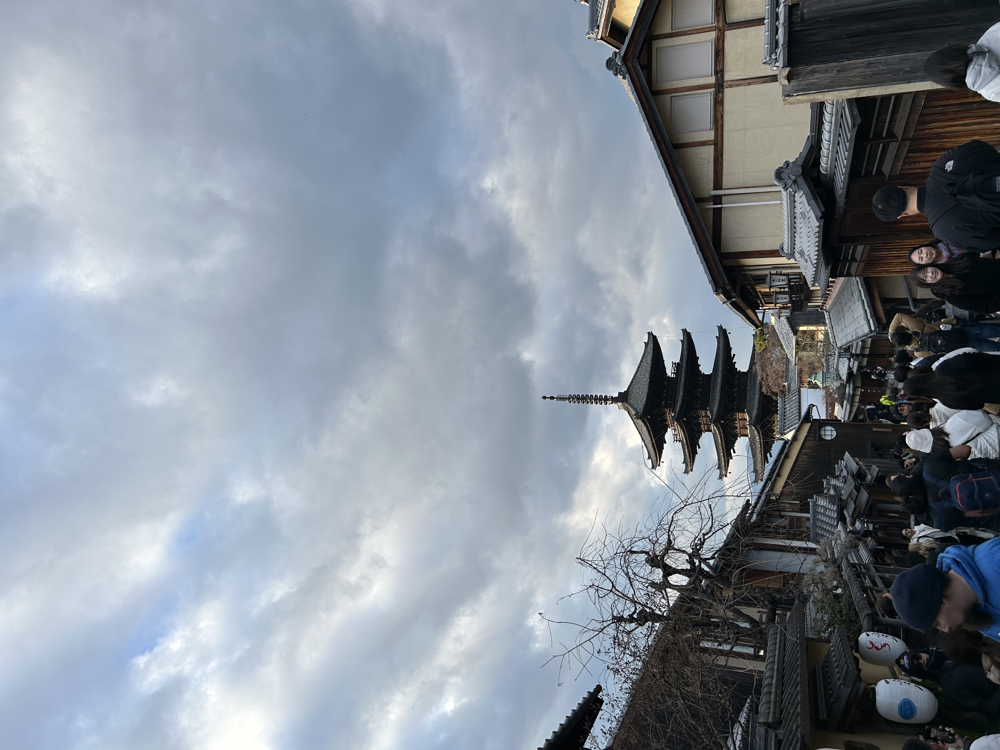
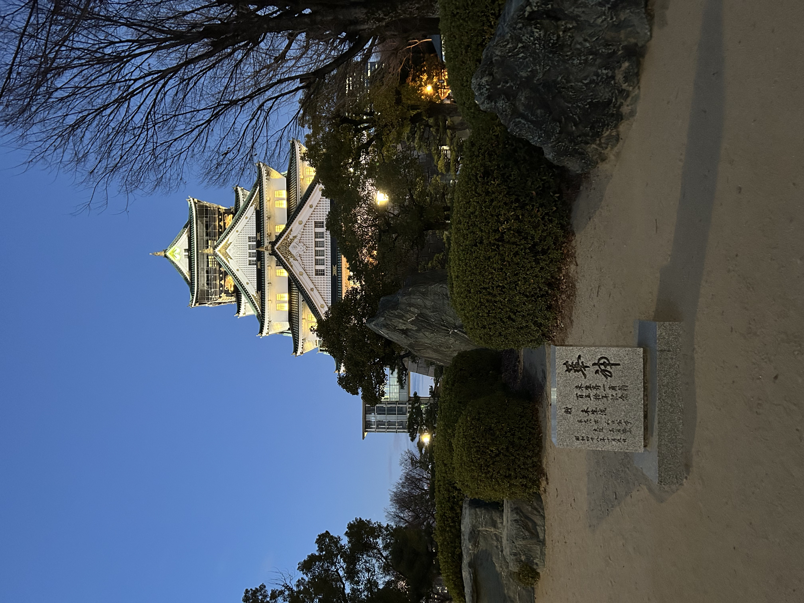
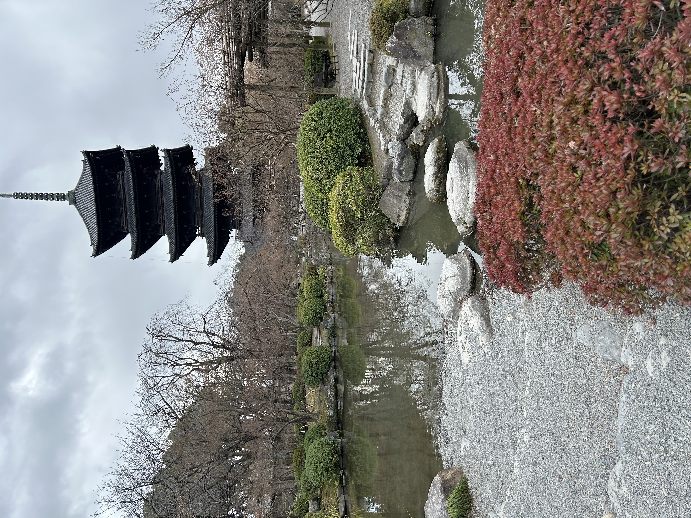

Photo Gallery
Echoes by Buildings
Every moment captured here is a whisper from the past, resonating deeply into the present. This gallery, themed "Life Echoes," explores the beautiful harmony between timeless history, sacred traditions, and the enduring spirits of cultural heritage. From the serene reflection of the Phoenix Hall and the silent dignity of Kiyomizu-dera to the glowing silhouette of Osaka Castle against the twilight sky, these images represent more than just scenery. They are the echoes of human devotion, artistry, and the passage of time. Like the ripple on a temple pond, the legacy of our ancestors continues to shape the world we see today, reminding us that our roots are always alive and breathing around us.





